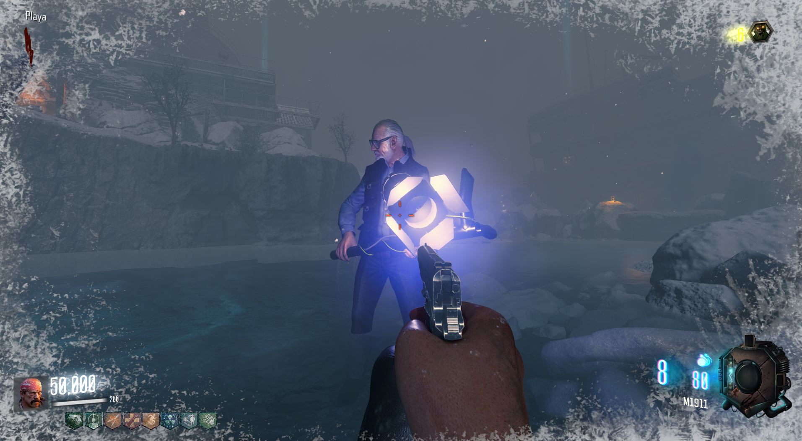

Perk Gratis (Call of the Dead)

Para conseguir un perk adicional gratis, lo único que deberemos hacer es matar a George Romero.
Tiene bastante vida, por lo que recomiendo usar la Scavenger.

Para conseguir un perk adicional gratis, lo único que deberemos hacer es matar a George Romero.
Tiene bastante vida, por lo que recomiendo usar la Scavenger.